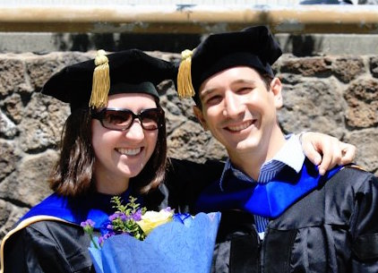
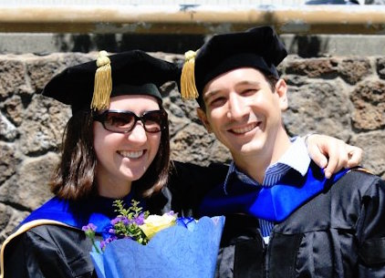

Brian & Isabelle Get Married
Welcome to our site about our wedding! We'll keep updating this with more details as we cement them, so check back later if you're left with any questions.
When?
Saturday, July 23, 2016
Where?
Huddart Park
1100 Kings Mountain Rd
Woodside, CA 94062
[Official website] [Google Maps]
Who?

 

Itinerary
| What | When | Where | More What |
|---|---|---|---|
| Assembly | ?:??-?:?? | Sequoia Amphitheater Picnic Area | Meet & mingle with your fellow guests. Light refreshments and some snacks as anticipation grows and crackles. |
| Ceremony | ?:??-?:?? | Sequoia Amphitheater | A few words and an exchange of vows. |
| Nature Walk | ?:??-?:?? | From Sequoia Amphitheater to Zwierlein Picnic Area | Low-key hike on a nature trail through some redwoods, from the ceremony to the reception. (Shuttle available for those who prefer.) |
| Reception | ?:??-8:00 PM | Zwierlein Picnic Area | Buffett and picnic seating. Dancing tunes on a portable P.A. speaker. Maybe some more kind words. Definitely horseshoes, bocce, and badminton across the way. |
| Afterparty | ?:??-?:?? | ??? | We're putting together an indoor component to the celebration as well. Renting out a classy little venue for the remainder of the evening is on our list of things to do. We'll update this space. |
Registry
Brian & Isabelle are pretty well set for the traditional registry items. So we're not expecting gifts. If you feel like commemorating the wedding with some matrial generosity, (a) thank you, very much! and (b) we'll decide on a charitable fund to which we'd love to hear about your donation.
Lodging & Travel
We're also working out a nearby block of hotel rooms to rent. The nearest, most convenient airport for flying in is and will be San Francisco International Airport, SFO. (Oakland Airport and San Jose are pretty good, too, just maybe an extra hour of ground travel.)
What to Wear
Dressing up is good! We're not aiming for tuxedoes or evening gowns, but something that shows up in the photo album as "made an effort" would be appreciated.
One place to take it extra casual, though, might be the footwear department. Part of our ceremony is all of us taking a pleasant, ten minute stroll through the redwoods, between the amphitheater and the reception area. It's a wooded nature trail, maintained by the park, but not pave.